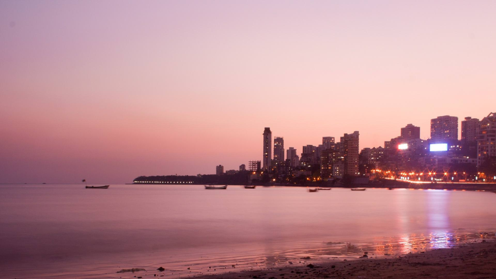
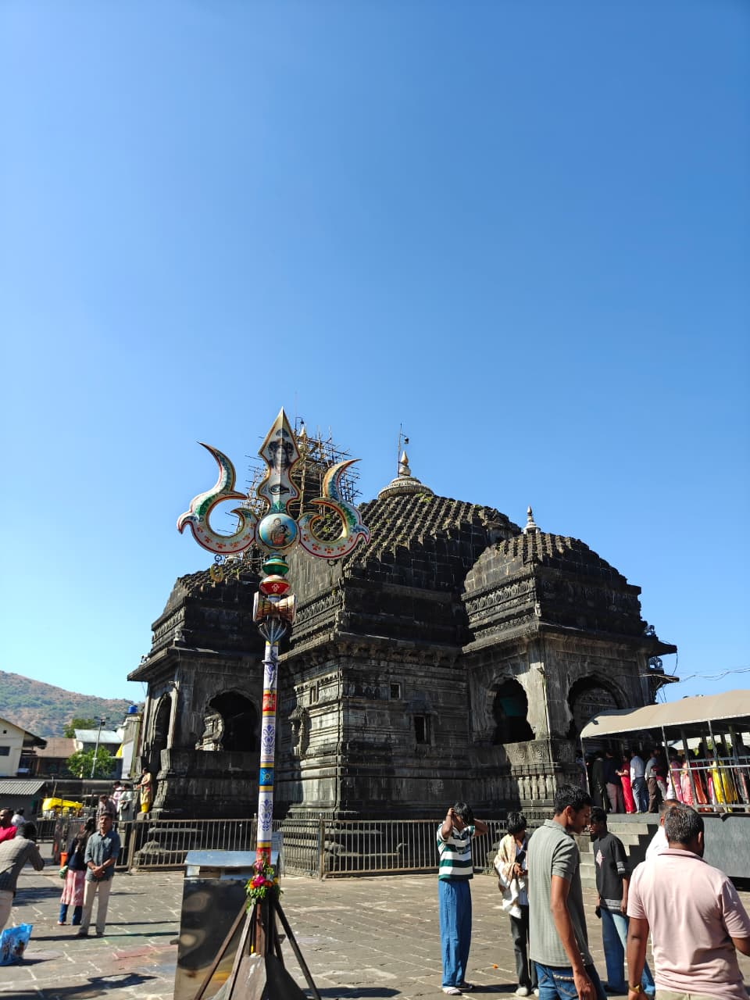
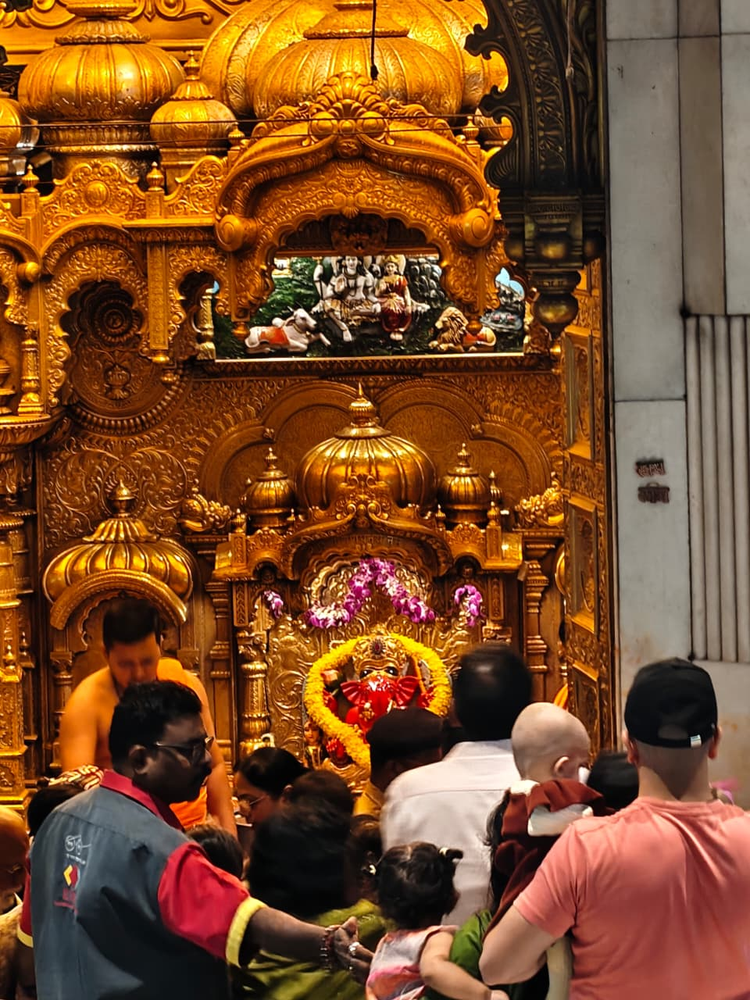

Discover Beautiful Tourist Places
Explore beautiful tourist destinations filled with culture, history, beaches, temples, and unforgettable experiences.
Explore PlacesMUMBAI
Why Visit Mumbai?
Mumbai is one of India’s most vibrant cities. From the famous Gateway of India to the peaceful Marine Drive and lively Juhu Beach, Mumbai offers unforgettable travel experiences for everyone.
Top Places to Visit

Gateway of India
A historic monument and one of Mumbai’s most iconic landmarks.The Gateway of India is an arch-monument, completed in 1924, on the waterfront of Mumbai, Maharashtra, India. It was erected to commemorate the landing of King George V of the United Kingdom for his coronation as the Emperor of India in December 1911 at Strand Road near Wellington Fountain.
Juhu Beach
Enjoy sunsets, street food, and relaxing walks by the sea.Juhu Beach is Mumbai's longest and most popular beach, located in a posh Western suburb known for its vibrant evening street food scene, iconic sunset views, and lively atmosphere. Open 24 hours, it is a bustling spot for tourists and locals to enjoy delicacies like bhel puri and pani puri along the Arabian Sea.

Marine Drive
Marine Drive in Mumbai is a famous 3.6-kilometer C-shaped promenade along the Arabian Sea, officially known as Netaji Subhash Chandra Bose Road. Known as the "Queen's Necklace" due to its stunning, glowing night-time appearance, it is a premier landmark for walks, sunsets, and nightlife in South Mumbai.

Trimbakeshwar Jyotirling
Trimbakeshwar Shiva Temple is an ancient Hindu temple in the town of Trimbak, in the Trimbakeshwar tehsil, in the Nashik District of Maharashtra, India, 28 km from the city of Nashik and 40 km from Nashik road.

Shree Siddhivinayak Temple
The Shri Siddhivinayak Ganapati Mandir is a Hindu temple dedicated to Ganesha. It is located in Prabhadevi neighbourhood of Mumbai, Maharashtra, India. It was originally built by Laxman Vithu and Deubai Patil on 19 November 1801. It is one of the most popular Hindu temples in Mumbai.
Plan Your Dream Trip
Tell us your favorite tourist place you would love to visit.